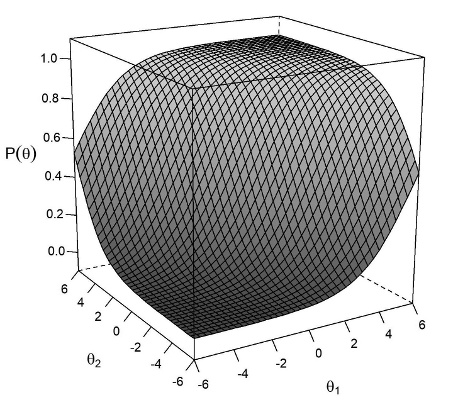
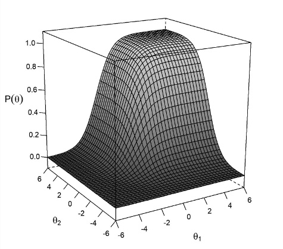
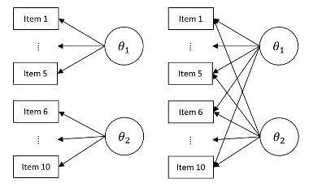
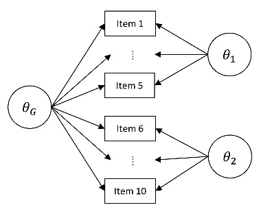

제5장과 제6장에서는 이분 및 다분 문항에 대한 IRT 모델을 제시하고 R에서 이러한 모델을 추정하는 방법을 살펴봤습니다. 제5장과 제6장에 제시된 IRT 모델의 공통적인 특징은 문항의 기저에 하나의 잠재 특성이 있다는 점입니다. 즉, 검사의 구조가 단일 차원이라고 가정합니다. 그러나 대부분의 교육 및 심리검사는 두 개 이상의 잠재 특성 또는 차원을 측정하는 경향이 있습니다(Ackerman, Gierl, & Walker, 2003). 문항이 2개 이상의 잠재 특성을 측정하는 경우, 이러한 검사 구조를 다차원이라고 합니다. 다차원 검사의 문항 모수와 잠재 특성 수준을 추정하려면 다차원 IRT(MIRT)를 사용해야 합니다.
제7장에서는 다차원성과 R에서 MIRT 모델을 적합하는 것에 초점을 둡니다. 교육 및 심리 측정의 맥락에서 다차원성에 대한 정의로 시작한 다음, MIRT와 관련된 개념(예: 보상 모델과 비보상 모델, 문항 내 다차원성과 문항 간 다차원성, 탐색적 MIRT와 확인적 MIRT)에 대해 간략하게 논의합니다. 그리고나서, mirt 패키지를 사용하여 공통 MIRT 모델, 특히 다차원 Rasch 모델, 다차원 2모수 모델, 다차원 등급반응모델, bi-factor 모델을 적합하는 방법을 보여줍니다(Chalmers, 2012). mirt 패키지는 다양한 MIRT 모델을 추정할 수 있지만, flirt(Jeon, Rijmen, & Rabe-Hesketh, 2014), TAM (Kiefer et al., 2016), eRm(Mair & Hatzinger, 2007a), and sirt (Robitzsch, 2017) 등 일부 MIRT 모형을 추정할 수 있는 다른 R 패키지도 있습니다.
7.2 다차원 문항반응모델링
제5장과 제6장에서 논의한 바와 같이, 단일차원 IRT 모델은 단일 잠재 특성 또는 구인을 측정하는 문항에 대한 피험자의 응답을 분석하는 데 적합합니다. 그러나 여러 잠재 특성을 동시에 측정하는 복잡한 문항의 경우, 정답 확률이 더 이상 단일 잠재 특성의 함수가 아니므로 단일 차원 IRT 모델을 사용하여 문항 응답을 모델링해서는 안 됩니다. 여러 잠재 특성이 포함된 복잡한 문항을 분석하려면 다차원 IRT 접근 방식(즉, MIRT 모델)을 사용해야 합니다. MIRT 모델은 주어진 문항에 정답할 확률을 단일 잠재 특성이 아닌 잠재 특성 벡터의 함수로 설명합니다. MIRT는 다양한 용도로 사용할 수 있지만, 이 모델링 프레임워크는 특히 다음과 같은 경우에 유용합니다.
하나 이상의 문항이 동시에 여러 잠재 특성을 측정할 때 문항 반응 데이터를 모델링하는 데 사용됩니다(Reckase, 2009).
상관관계가 있는 잠재 특성을 측정하는 개별 검사 또는 하위 검사가 있을 때 측정의 정밀도를 향상시키기 위해 사용됩니다(Wang, Chen, & Cheng, 2004).
1980년대 초부터 연구자들은 다양한 MIRT 모델을 제안해 왔는데(예: Adams, Wilson, & Wang, 1997; Reckase, 1985; Yao & Schwarz, 2006), 이는 종종 단일 차원 IRT 모델을 다차원으로 확장한 것입니다. 이 장에서, 우리는 몇 가지 MIRT 모델에 초점을 맞추고 R의 mirt 패키지를 사용하여 모델을 맞추고 추정하는 방법을 보여줍니다. 다차원 문항 반응 모델링에 대한 보다 포괄적인 논의는 Reckase(2009)의 다차원 문항반응이론을 검토하는 것이 좋습니다.
MIRT 모델은 여러 가지 방법으로 분류할 수 있습니다. 예를 들어, 하나의 차원(즉, 잠재 특성)의 약점(또는 결점)이 다른 차원의 강점으로 보완될 수 있는지 여부에 따라 MIRT 모델을 분류할 수 있습니다. 또한 각 문항이 단일 잠재 특성과 연관되어 있는지 또는 여러 잠재 특성과 연관되어 있는지에 따라 MIRT 모델을 그룹화할 수 있습니다. 다음 섹션에서는 이러한 분류에 대해 간략하게 설명합니다.
7.2.1 보상적 MIRT와 비보상적 MIRT
MIRT 모델은 잠재 특성 간의 보상 관계의 존재 여부에 따라 보상적 또는 비보상적으로 특징지을 수 있습니다(Sijtsma & Junker, 2006). 보상적 MIRT 모델의 부가적 특성은 서로 다른 기울기(즉, 변별도) 모수로 가중치를 부여한 일련의 잠재 특성의 합을 기반으로 정의합니다. 보상적 MIRT 모델을 사용하면 한 잠재 특성의 약점을 다른 잠재 특서의 강점으로 보상할 수 있습니다(Reckase, 1997; Yao & Boughton, 2007). 예를 들어, 수학 실력이 낮은 피험자가 대수 실력이 높으면 수학 문제를 정답으로 맞힐 수 있습니다.
그림 7.1은 2차원 보상적 MIRT 모델의 이분 문항에 대한 그래픽 그림입니다. 단일차원 IRT 모델의 문항특성곡선(item characteristic curve)과 달리, MIRT 모델은 문항이 두 개의 잠재 차원, 즉 \(\theta_1\)과 \(\theta_2\)와 연관되어 있기 때문에 문항특성표면(item characteristic surface)을 산출합니다. 이 특정 문항의 경우, 두 차원은 상보적 관계를 갖습니다. 문항 표면은 차원 1의 숙련도가 낮고(예: \(\theta_1\)=0), 차원 2의 숙련도가 높은(예: \(\theta_2\)=2)피험자도 차원 1의 낮은 숙련도가 차원 2의 높은 숙련도로 보상되기 때문에 문항에 정답할 확률이 여전히 높다는 것을 보여줍니다.

보상적 MIRT 모델에 대한 문항특성표면
보상적 모델과 달리, 비보상적 MIRT 모델의 곱셈적 특성은 각각 다른 잠재적 특성을 기반으로 한 확률의 곱셈을 기반으로 정합할 확률을 정의합니다. 따라서 한 차원에서의 약점은 다른 차원의 강점으로 보상할 수 없습니다. 예를 들어, 수학 실력이 낮은 피험자가 읽기 실력이 높다고 해서 단어 문제에서 정답을 못 맞힐 수 있는데, 이는 문항이 두 가지 능력이 모두 필요로 하기 때문입니다. 비보상적 MIRT 모델은 부분 보상적 모델이라고도 하는데, 이는 비보상적 모델도 일부 보상을 허용하기 때문입니다(Reckase, 2009). 인지평가 문헌에서 비보상적 MIRT 모델이 여러 번 적용되었지만(예: Embretson, 1997; Junker & Sijtsma, 2001; Maris, 1995), 보상적 모델과 요인분석 모델 간의 이론적 유사성 때문에 연구자들 사이에서 보상적 MIRT 모델이 더 많이 사용되었습니다(Sijtsma & Junker, 2006).
그림 7.2는 2차원 비보상적 MIRT 모델에서 이분 문항에 대한 문항특성표면을 보여줍니다. 문항 표면도를 보면 두 차원 모두에서 높은 숙련도가 있어야 문항 정답을 맞힐 수 있음을 알 수 있습니다. 즉, 한 차원에서의 숙련도가 낮은 피험자는 다른 차원에서의 숙련도가 높더라도 해당 문항의 정답을 맞힐 수 없습니다.

비보상적 MIRT 모델에 대한 문항특성표면
7.2.2 문항 간 및 문항 내 다차원성
MIRT 모델은 검사 구조에 따라 두 가지 그룹으로 분류할 수 있습니다. 문항 간 모델과 문항 내 MIRT 모델이 그것입니다(Adams et al., 1997; Wang et al., 2004). 문항 간 MIRT 모델에서는 각 잠재 특성이 고유한 문항 세트로 측정됩니다. 즉, 각 문항은 검사에서 측정된 잠재 특성 중 하나에만 연관됩니다. 이러한 유형의 검사 구조는 문항이 단일 요인에 적재되는 요인 분석 해와 마찬가지로 단순 구조라고도 합니다(요인 분석에 대한 검토는 제4장 참조). 문항 간 MIRT 모델은 일반적으로 상호 연관된 잠재 특성을 측정하는 하위 검사에서 하위 점수를 추정하는 데 사용됩니다(예: Bulut, Davison, & Rodriguez, 2017; de la Torre, Song, & Hong, 2011; Wang et al., 2004). 문항 내 MIRT 모델에서 각 문항은 검사에서 측정된 두 개 이상의 잠재 특성과 연관될 수 있습니다. 이러한 유형의 검사 구조를 비단순 또는 복합 구조라고 합니다. 문항 내 다차원성의 좋은 예는 인지 능력 평가의 이중 요인 검사 구조로, 모든 문항은 일반적인 잠재 특성(예: 일반 지능)과 연관되고 각 문항은 이차 잠재 특성(예: 특정 인지 능력)과 연관됩니다.
그림 7.3은 두 개의 잠재 특성을 측정하는 검사에 대한 문항 간 및 문항 내 MIRT 모델을 보여줍니다. 문항 간 모델에서 문항 1부터 문항 5는 첫 번째 잠재 특성인 \(\theta_1\)과 연관되고, 문항 6부터 문항 10은 두 번째 잠재 특성인 \(\theta_2\)와 연관됩니다. \(\theta_1\)과 \(\theta_2\)는 공통 문항을 공유하지 않습니다. 따라서 검사 구조는 각 잠재 특성이 일련의 단차원 문항으로 정의되고 전체 구조는 다차원 구조가 되는 다차원 구조가 됩니다. 문항 내 모델에서는 문항이 \(\theta_1\)과 \(\theta_2\) 모두와 연관되어 있으므로 검사의 구조가 단순하지 않습니다. 그림 7.3에 제시된 MIRT 모델에서는 \(\theta_1\)과 \(\theta_2\)가 상관관계가 있을 가능성이 높습니다. 그러나 잠재 특성 간의 상관관계가 커질수록 추정 결과의 신뢰도가 낮아질 가능성이 높습니다(Bulut et al., 2017).

문항 간 구조(왼쪽)와 문항 내 구조(오른쪽)
7.2.3 탐색적 MIRT와 확인적 MIRT 분석
MIRT 모델로 반응 데이터를 분석할 때 검사 구조는 탐색적 또는 확인적 방식으로 정의될 수 있습니다. 문항의 기저에 있는 검사 구조에 대한 선험적 가설이 없는 경우, 문항 모수와 잠재 특성 수준을 추정하기 전에 예상되는 차원 수만 지정하면 됩니다. 이것이 바로 데이터에서 잠재 특성과 문항 간의 연관성을 도출하는 탐색적 MIRT 접근 방식입니다. 검사 구조에 관한 가설이 있는 경우, 차원 수와 문항과 차원 간의 관계를 모두 지정해야 합니다(Reckase, 2009, 179쪽). 연구자가 이론에 근거하여 검사 구조를 지정하기만 하면 되기 때문에 이를 확인적 MIRT 접근법이라고 합니다. 탐색적 MIRT 분석은 데이터의 기초가 되는 차원 수를 찾는 데 자주 사용됩니다. 이러한 유형의 분석은 제4장에서 설명한 탐색적 요인 분석과 유사합니다. 이 장에서는 차원 수와 문항과 잠재 특성 간의 관계를 정의하는 확인적 MIRT 모델에 중점을 둡니다(제4장에서 설명한 확인적 요인 분석과 유사함).
7.3 일반적 MIRT 모델
이 장에서는 몇 가지 일반적인 MIRT 모델을 살펴봅니다. 이러한 모델에는 다차원 2모수 모델, 다차원 Rasch 모델, 다차원 등급반응모델, 이요인 모델이 포함됩니다. 이어지는 섹션에서는 이러한 MIRT 모델에 대해 간략하게 설명하고 mirt 패키지를 사용해 이러한 모델을 적합하고 추정하는 방법을 보여줍니다.
7.3.1 다차원 2모수 모델
다차원 2모수(M2PL) 모델은 단일차원 2모수 모델을 확장한 것입니다. M2PL 모델은 다차원 검사에서 문항 난이도와 변별도 모수를 추정할 수 있는 보상적 MIRT 모델입니다. 검사 구조는 문항 간일 수도 있고 문항 내일 수도 있습니다. M2PL 모델은 다음과 같이 작성할 수 있습니다.
\(\theta_j\)는 피험자 \(j\)에 대한 잠재 특성 1 X \(M\) 벡터( \(\theta_j\) = \(\theta_{j1}, \theta_{j2},..., \theta_{jM}\)))
\(a_i\)는 문항 \(i\)에 대한 기울기 모수(예: 문항 변별도) 1 X \(M\) 벡터( \(a_i\) = \(a_{i1}, a_{i2},..., a_{iM}\)))
\(d_i\)는 문항 \(i\)에 대한 절편항
절편 모수 \(d_i\)는 문항의 난이도를 나타내는 고유한 지표로 간주할 수 없기 때문에 단일차원 IRT 모델에서의 문항 난이도 모수와는 유사하지 않습니다(Reckase, 2009). 절편 모수로부터 전통적인 난이도 모수를 얻기 위해 변환을 수행할 수 있습니다. 이 변환 공식은 다음과 같습니다.
MIRT 모델의 문항 변별도 모수는 변환을 사용해 단일 값으로 요약할 수 있습니다. 실제로 이 변환은 방정식 7.2의 분모로 다음과 같습니다.
\[
A_i=\sqrt{\sum_{m=1}^M a^2_{im}}
\]
여기서 \(A_i\)는 다차원 변별도 모수로 문헌에서는 MDISC라고도 합니다.
다차원 변별도 모수는 단일차원 IRT 모델의 문항 변별도 모수와 유사합니다. 이 모수는 다차원 문항의 전반적인 변별도 수준을 나타냅니다. 문항이 단일 잠재 특성과만 연관된 경우, 방정식 7.1의 \(a_i\)는 0이 아닌 요소가 하나만 있습니다(예: 3차원 검사에서 \(a_i\)=(1.4,0,0). 이 경우에 다차원 변별도 모수는 \(a_i\)의 0이 아닌 요소와 같습니다.
M2PL 모델을 적합하고 추정하는 방법을 보여드리기 위해 hemp 패키지의 mimic 데이터 세트를 사용합니다. 분석을 시작하기 전에 먼저 library 명령으로 hemp 및 mirt 패키지를 활성화합니다.
library(hemp)
Loading required package: psych
Loading required package: lattice
Loading required package: lavaan
This is lavaan 0.6-16
lavaan is FREE software! Please report any bugs.
Attaching package: 'lavaan'
The following object is masked from 'package:psych':
cor2cov
Loading required package: mirt
Loading required package: stats4
Loading required package: lme4
Loading required package: Matrix
Attaching package: 'lme4'
The following object is masked from 'package:mirt':
fixef
Loading required package: reshape2
Loading required package: boot
Attaching package: 'boot'
The following object is masked from 'package:lattice':
melanoma
The following object is masked from 'package:psych':
logit
Loading required package: equate
library(mirt)
mimic 데이터 세트에는 24문항, 2000명의 피험자에 대한 응답이 포함되어 있습니다. 문항은 이분으로 채점되어 있습니다(예: 1=정답, 0=오답). 문항의 레이블은 item1, item2, …, item24로 표시됩니다. 검사 구조는 문항 내 다차원(복합)으로 item1부터 item6, item13부터 item21, item 23, item24가 첫 번째 잠재 특성과 연관되고, item7부터 item20, item22부터 item24는 두 번째 잠재 특성과 연관됩니다.
M2PL 모델에 적합하기 위해 제5장과 제6장에서 단일차원 IRT 모델을 추정할 때와 마찬가지로 mirt 패키지의 mirt 함수를 다시 사용합니다. 다차원 IRT 모델을 추정하기 위한 R 명령은 제5장 및 제6장에서 설명한 명령과 매우 유사합니다. 가장 큰 차이점은 다차원 검사 구조는 단일 잠재 특성이 아닌 두 개 이상의 잠재 특성을 포함하므로 검사 구조의 정의입니다.
mimic 데이터 세트는 2차원 구조를 가지고 있기 때문에 두 개의 잠재 특성(F1, F2)을 정의합니다. 검사 구조를 정의할 때 각 잠재 특성과 연관된 문항을 지정합니다. 각 문항을 하나씩 나열하는 대신 제5장과 제6장에서와 같이 각 잠재 특성에 대한 문항의 범위를 지정할 수 있습니다. 예를 들어 1-6은 item1부터 item6까지를 의미합니다. 쉼표를 사용해 문항 집합을 구분합니다(예: 1-6, 13-21, 23-24). mimic 데이터 세트에는 문항 내 검사 구조가 있으므로 item13부터 item 20, item 23, item24가 두 잠재 특성에 대해 나타납니다. 모델 정의의 마지막 줄 COV=F1 * F2는 추정하려는 공분산 항을 정의합니다. 이 예에서는 두 잠재 특성 간의 공분산을 추정하고자 합니다. 따라서 모델 정의에 COV=F1 * F2를 포함합니다. 이 줄을 건너뛰면 F1과 F2 사이의 공분산을 0으로 고정하고, 이것은 잠재 특성이 직교라고 가정합니다. 기본적으로 mirt 함수는 잠재 특성 F1 및 F2의 분산을 1로 고정합니다. 모델에서 이러한 분산을 추정하려면 현재 cov 구문을 COV=F1 * F2, F1 * F1, F2 * F2로 대체할 수 있습니다. 또한 잠재 특성의 평균은 0으로 고정됩니다. 만일 평균을 추정해야 한다면 검사 구조에 이를 지정해야 합니다(예: MEAN=F1, F2). 이러한 제약 조건은 제4장에서 요인 분석의 맥락에서 설명한 것처럼 식별을 위해 만들어졌습니다. 이 검사 구조를 m2pl2_mod로 저장합니다.
mirt 함수에서 적합할 모델을 model = mod2pl_mod로 지정하고 itemtype = “2PL”로 문항 유형을 지정합니다. mirt 함수의 기본 추정 알고리즘은 method = “EM”이며, 이는 기대치 최대화 알고리즘입니다. 차원이 최대 3개인 MIRT 모델의 경우 EM 알고리즘이 효과적인 것으로 간주되지만, 3차원 이상의 검사 구조일 때에는 다른 추정 알고리즘(예: method = “MHRM”)을 권장합니다(자세한 내용은 mirt 패키지 매뉴얼 참조). 적합된 모델을 m2pl_fit으로 저장하고, 추정된 모수를 coef 함수를 이용해 추출한 다음 m2pl_params로 저장합니다.
m2pl_fit <-mirt(data = mimic, model = m2pl_mod, itemtype ="2PL", method ="EM", SE =TRUE)
결과는 단일차원 IRT 모델에서 보았던 출력과 매우 유사합니다. 그러나 변별도 모수가 하나만 있는 대신, 첫 번째 및 두 번째 잠재 특성에 대한 변별도(즉, 기울기) 모수를 각각 나타내는 두 개의 열, a1 및 a2가 있습니다. 일부 변별도 모수는 0과 같다는 것을 알 수 있습니다. 이는 일부 문항이 첫 번째 또는 두 번째 잠재 특성과만 연관되어 있고 두 가지 모두와 연관되어 있지 않기 때문입니다. 예를 들어, item1의 문항 변별도 값은 a1에 대해서는 0이 아니고 a2에 대해서는 0입니다. 이는 item1이 첫 번째 잠재 특성(즉, F1)과는 연관되어 있지만 두 번째 잠재 특성(즉, F2)과는 연관되어 있지 않음을 나타냅니다. item1과 달리 item13은 F1과 F2 모두에 연관되어 있기 때문에 a1 및 a2 모두 0이 아닌 문항 변별도 모수를 갖습니다. 다음 열인 d는 문항의 추정된 절편 모수를 나타냅니다. 마지막 두 열인 g와 u는 다시 하부 점근(즉, 추측도) 및 상부 점근 모수입니다. M2PL 모델을 사용했기 때문에 모든 문항에 대해 하한 점근 모수는 0으로 고정되고 상한 점근 모수는 1로 고정됩니다.
다음으로, mirt 패키지의 MDIFF 및 MDISC 함수를 사용하여 변별도 및 절편 모수를 방정식 7.2 및 7.3에 따라 다차원 문항 난이도 및 변별도 모수로 변환합니다. 그런 다음 data.frame 함수를 사용하여 변환된 모수를 데이터 프레임으로 결합하고 이를 m2pl_items로 저장합니다. 마지막으로 다차원 문항 모수의 이름을 바꾸고 head 함수를 사용하여 처음 6개의 문항을 출력합니다.
문항 모수 외에도 m2pl_params 끝에 $cov를 추가하여 두 잠재 특성의 추정 분산-공분산 행렬을 볼 수도 있습니다. 결과에는 2 X 2 행렬이 표시되며, 대각선 요소는 잠재 특성인 F1 및 F2의 분산이고 대각선 아래쪽 요소는 두 잠재 특성의 공분산입니다. 아래 결과에서 F1과 F2의 분산은 위에서 언급한 식별상의 이유로 1이며, 두 잠재 특성의 공분산은 0.588로 추정됩니다.
m2pl_params$cov
F1 F2
F1 1.000000 0.588067
F2 0.588067 1.000000
잠재 특성의 분산은 1로 고정되어 있으므로 분산-공분산 행렬은 실제로 잠재 특성의 상관 관계 행렬입니다. 따라서 F1과 F2의 상관관계도 .588이 됩니다. 그러나 모델에서 F1과 F2의 분산을 추정했다면 다음 공식을 사용하여 추정된 공분산을 상관 계수로 변환할 수 있습니다.
여기서 \(S_{F1}\)과 \(S_{F2}\)는 잠재 특성 F1과 F2의 표준 편차이고 \(cov(F1, F1)\)는 두 잠재 특성 간의 공분산을 나타냅니다.
단일차원 IRT 모델에서와 마찬가지로 MIRT 모델의 문항 및 검사 특성을 그래픽으로 살펴볼 수 있습니다. MIRT 모델은 중다 잠재 특성을 함께 사용하여 문항에 정답할 확률을 계산하고, 문항 및 검사 정보를 계산하고, 기타 속성을 조사하는 문항 및 검사 표면 그래프를 생성합니다. 표면 그래프와 동일한 정보를 전달할 수 있는 등고선 그래프도 있습니다. 등고선 그래프는 조감도에서 정보를 표시합니다. 즉, 등고선 그래프는 표면 그래프를 위에서 본 것처럼 보여줍니다. 등고선 그래프는 표면 그래프에 비해 해석하기 쉬운 경우가 많습니다. 두 개 이상의 잠재 특성을 포함하는 MIRT 모델은 어떤 유형의 그래프를 선택하든 그래픽으로 요약하기가 더 어렵다는 점에 유의해야 하는데, 그 이유는 (1) mirt 패키지의 plot 함수는 2차원만 처리할 수 있고 (2) R의 다른 그래픽 함수는 2차원 및 3차원 공간의 데이터로 제한되어 있기 때문입니다.
다음 예제에서도 itemplot 함수를 사용하여 문항을 플롯합니다. item13은 두 잠재 특성과 연관된 문항 중 하나이므로 아래 예제에서는 이 문항을 사용합니다. itemplot 함수를 type = “trace” 옵션과 함께 사용하여 먼저 item13에 대한 문항 특성 표면 그래프를 만듭니다. 이 그래프는 x축에 첫 번째 잠재 특성, y축에 두 번째 잠재 특성, z축에 item13의 정답할 확률을 축으로 하는 3차원 그래프입니다. 그런 다음 type = “tracecontour”를 사용하여 동일한 문항에 대한 문항 등고선 그래프 그립니다.
itemplot(m2pl_fit, type ="trace", item =13)
itemplot(m2pl_fit, type ="tracecontour", item =13)
그림 7.4와 7.5는 모두 첫 번째 잠재 특성(\(\theta_1\))과 두 번째 잠재 특성(\(\theta_2\))의 함수에 따라 item13의 정답 확률이 어떻게 변하는지를 보여줍니다. M2PL 모델은 보상적 MIRT 모델이기 때문에 한 잠재 특성의 약점은 다른 잠재 특성의 강점으로 보상될 수 있습니다. 예를 들어, \(\theta_1 = 0\)이고 \(\theta_2 = 2\)인 경우 \(\theta_1\)이 \(\theta_2\)보다 상대적으로 낮음에도 불구하고 item13의 정답 확률은 거의 .80(즉, 80%)입니다.
문항 특성 표면 외에도, 잠재 특성 수준을 기반으로 문항이 제공하는 정보를 조사할 수도 있습니다. 문항 정보 그래프를 만들려면 itemplot 함수에서 type = “info”를 설정합니다. 결과 그래프는 문항 특성 표면 그래프과 유사하지만 이번에는 z축에 문항의 성공 확률 대신 문항 정보 수준이 표시됩니다. 그림 7.6은 두 잠재 특성이 모두 0에 가까울 때 문항 정보 수준이 가장 높은 반면, 두 잠재 특성이 모두 매우 낮거나 매우 높을 때 문항 정보가 가장 낮다는 것을 보여줍니다.
itemplot(m2pl_fit, type="info", item =13)
문항 특성 표면 그래프와 마찬가지로 문항 정보 그래프도 등고선 그래프로 그릴 수 있습니다. 또한 문항의 기대 점수 및 표준 오차 값을 검사하는 데 문항 플롯 함수를 사용할 수 있습니다. 이러한 그래프를 그리기 위한 R 명령은 다음과 같습니다.
itemplot(m2pl_fit, type ="infocontour", item =13)
itemplot(m2pl_fit, type ="score", item =13)
itemplot(m2pl_fit, type ="SE", item =13)
위에 요약된 문항 수준 그래프 외에도 검사 수준에서 그래프를 그릴 수도 있습니다. 이러한 그래프는 검사 정보 함수 및 조건부 측정의 표준 오차를 요약합니다. 다음 명령은 TIF 그래프 및 cSEM 그래프를 만들기 위한 plot 함수의 사용을 보여줍니다. 그림 7.7은 mimic 데이터 세트에 포함된 모든 문항에 대한 TIF 및 cSEM 그래프를 보여줍니다.
plot(m2pl_fit, type ="info")
plot(m2pl_fit, type ="SE")
제5장에서는 잠재 특성 수준을 추정하기 위해 mirt 패키지의 fscores 함수를 사용하는 방법을 보여드렸습니다. MIRT 모델의 경우, 동일한 절차에 따라 다차원 평가에서 잠재 특성 수준을 추정할 수 있습니다. 아래 예에서는 M2PL 모델에서 잠재 특성 수준을 추정하기 위해 최대 사후 추정(MAP) 및 기대 사후 추정(EAP) 방법을 사용합니다. MAP 및 EAP 추정량에 대해서는 각각 method = “MAP” 및 method = “EAP”를 지정합니다. ML 기반 추정치는 fscores 함수에서 method = “ML”을 사용하여 얻을 수도 있습니다. 제5장에서 설명했듯이 최대 우도(ML) 추정에서는 피험자가 모든 문항의 응답이 틀리거나 정답인 경우 결과를 제공하지 못합니다. MIRT 모델에서 잠재 특성 수준을 추정할 때도 동일한 문제가 지속됩니다. 아래에서는 잠재 특성 수준을 추정하고 결과를 m2pl_map 및 m2pl_eap으로 저장한 다음 head 함수를 사용하여 처음부터 6행을 출력합니다.
결과에서 F1 및 F2 열은 잠재 특성 추정치이고 SE_F1 및 SE_F2는 추정된 잠재 특성에 대한 표준 오차입니다. 다음으로, MAP 및 EAP 방법의 잠재 특성 추정치를 m2pl_scores라는 새 데이터 세트에 결합한 다음 잠재 특성 추정치 간의 상관 관계를 살펴봅니다. 결과는 MAP 방법과 EAP 방법의 잠재 특성 추정치가 높은 상관관계가 있음을 보여줍니다. 또한 두 잠재 특성 간의 점수도 높은 상관관계가 있음을 알 수 있습니다(MAP와 EAP의 경우 약 0.78).
문항 및 검사 구조에 대한 이론적 가정과 기대치에 따라 검사 구조의 정의를 수정하여 보다 구체적인 MIRT 모델을 추정할 수도 있습니다. 예를 들어, 일부 문항은 동일한 기울기 및 절편 모수를 갖도록 제약할 수 있습니다. 두 잠재 특성 사이의 고유 문항이 동일한 기울기 모수를 가질 것으로 예상한다고 가정하면 모델 정의에서 CONSTRAIN 문을 사용할 수 있습니다.
M2PL 모델의 비보상적 버전도 있습니다. 비보상적 M2PL을 추정하려면 itemtype = “2PL”을 itemtype = “PC2PL”로 바꿔야 합니다. 보상적 M2PL 모델과 달리 문항은 두 잠재 특성 각각에 대해 별도의 기울기 및 절편 모수를 갖게 됩니다. 또한 비보상적 M2PL 모델에서는 잠재 특성 간에 보상이 이루어지지 않습니다.
m2pl_fit <-mirt(data = mimic, model = m2pl_mod, itemtype ="PC2PL", SE =TRUE)
mimic 데이터 세트에서 문항에는 추측도가 포함되지 않습니다. 그러나 문항 응답이 추측도의 영향을 받는 것으로 의심되는 경우 itemtype = “3PL”을 사용하여 다차원 3PL 모델을 선택할 수 있습니다. 또는 mirt 함수에서 추측도 모수를 설정하여 모든 문항에 대해 고정된 낮은 점근값을 정의할 수 있습니다(예: guess = 0.10).
7.3.2 다차원 Rasch 모델
Adams 외(1997)는 중다 잠재 특성을 측정하는 검사에서 문항 모수를 추정할 수 있는 다차원 형태의 Rasch 모델을 도입했습니다. 이 모델은 문헌에서 다차원 무선 계수 다항식 로짓 모델이라고도 알려져 있습니다. Adams 외(1997)가 설명한 이 모델은 Rasch 모델의 일반적인 형태이며 이분 및 다분 문항을 모두 처리할 수 있습니다. Adams 외(1997)의 표기법을 사용하여, 다차원 Rasch 모형은 피험자 \(j\)가 \(M\)-차원 검사의 문항 \(i\)에서 응답 범주 \(k(k = 0, 1, 2, ..., K)\)를 선택할 확률을 다음과 같이 정의합니다.
\(a_{ik}\)과 \(b_{ik}\)는 문항 변별도와 문항 난이도 모수를 나타내는 것이 아니라 가설을 바탕으로 검사 구조에서 도출된 가중치라는 점에 주의해야 합니다. 방정식 7.5에서 추정되는 유일한 모수는 \(\xi\) 및 \(\theta_j\)입니다.
다차원 Rasch 모델은 중다 잠재 특성을 측정하는 문항 간 및 문항 내 검사 구조에 모두 사용할 수 있습니다. 다차원 Rasch 모델에서 잠재 특성 간의 상관관계는 추가 정보로 사용됩니다. 잠재 특성 간의 상관관계를 통해, 특히 검사가 짧고 추정되는 잠재 특성의 수가 많은 경우 정밀도를 크게 향상시킬 수 있습니다(Wang et al., 2004). 다음 예에서는 mimic 데이터 세트를 사용하여 다차원 Rasch 모델을 적합하는 방법을 보여줍니다. 예상된 검사 구조가 모델 간에 변경되지 않기 때문에 모델 정의는 M2PL 모델의 정의와 동일합니다. 다차원 Rasch 모델을 추정하려면 itemtype = “Rasch”를 지정하기만 하면 됩니다. 나머지 요소는 M2PL 모델의 이전 예와 동일합니다.
다음으로 MDIFF 함수를 사용하여 절편 모수를 문항 난이도 모수로 변환합니다. 결과에서 단일 잠재 특성과 관련된 문항의 경우 d 모수의 부호만 변경된 반면, 두 잠재 특성과 관련된 문항의 경우 변환 후 문항 난이도 모수가 달라진 것을 확인할 수 있습니다. 다차원 Rasch 모델에 따르면 item10이 가장 쉬운 문항이고 item11(출력되지 않음)이 가장 어려운 문항입니다.
마지막으로 두 잠재 특성의 추정된 분산-공분산 행렬을 출력합니다. 출력에 따르면 F1과 F2의 분산은 각각 0.689와 0.739입니다. 두 잠재 특성의 공분산은 0.344입니다.
mrasch_params$cov
F1 F2
F1 0.6892990 0.3436748
F2 0.3436748 0.7388482
M2PL 모델에서와 마찬가지로 itemplot 및 plot 함수를 사용하여 문항 및 검사 특성을 시각적으로 조사할 수 있습니다. 이러한 그래프에 대한 R 명령은 아래에 나와 있습니다.
itemplot(mrasch_fit, type ="trace", item =13)
itemplot(mrasch_fit, type ="tracecontour", item =13)
plot(mrasch_fit, type ="info")
plot(mrasch_fit, type ="SE")
plot(mrasch_fit, type ="score")
7.3.3 다차원 등급 반응 모델
앞서 소개한 M2PL 모델과 다차원 Rasch 모델 모두 이분 문항에 적합합니다. 다분 문항에도 MIRT 프레임워크를 사용할 수 있습니다. 제6장에서는 서열 및 명목형 응답 범주가 있는 다분 문항에 대한 단일차원 IRT 모형을 제시했습니다. 제6장에서 제시된 각 IRT 모델에는 다차원 형태가 있지만, 이 섹션에서는 특히 다차원 등급 반응 모델(MGRM)에 중점을 둡니다. 다른 다차원 IRT 모델(예: 부분 점수 모델 및 등급 척도 모델)의 다차원 형태도 유사한 방식으로 추정할 수 있습니다.
MGRM에서 피험자 \(j\)가 문항 \(i\), \(\theta_j\)에서 응답 범주 \(k\)를 선택할 확률은 다음과 같이 쓸 수 있습니다.
MGRM을 추정하는 방법을 설명하기 위해, hemp 패키지의 depression 데이터 세트를 사용합니다. depression 데이터 세트에는 2000명의 피험자가 가상의 우울 척도 20개 문항에 대해 응답한 내용이 포함되어 있습니다. 간단한 다차원 구조 내에서, 첫 번째 10개 문항은 우울의 인지적 증상을 측정하고, 두 번째 10개 문항 세트는 우울의 신체적 증상을 측정합니다. 문항 이름은 depression 데이터 세트의 item1, item2, …, item20에 해당합니다. 모든 문항은 5개의 반응 범주로 다분으로 채점됩니다(0 = 매우 동의하지 않음, 1 = 동의하지 않음, 2 = 동의나 동의하지도 않음, 3 = 동의함, 4 = 매우 동의함).
MGRM을 추정하기 위해 다시 mirt 패키지의 mirt 함수를 사용합니다. mirt의 모델 구문을 사용하여 인지적 특성과 신체적 특성이라는 두 가지 잠재적 특성을 정의하고 이를 mgrm_mod로 저장합니다. 구조가 단순하기 때문에 두 잠재 특성 간에 공통 문항이 없습니다. mirt 함수에서 itemtype = “graded”를 지정하여 mgrm_mod에 정의된 2차원 구조를 기반으로 MGRM을 추정합니다. 모델을 적합하고, 문항 모수를 추출하고, 아래에 처음부터 6개 문항을 출력합니다.
결과에서 열 a1 및 a2는 기울기 모수이고 나머지 열은 절편 모수(즉, 범주 임계값)입니다. 앞서 설명했듯이 기울기 및 절편 모수는 방정식 7.6에 정의된 모수와 동일하지 않습니다. 추정된 문항 모수(즉, 기울기 및 절편)를 다차원 문항 변별도 및 범주 임계값 모수로 변환하기 위해 다시 MDISC 및 MDIFF 함수를 사용합니다.
마지막으로 depression 데이터 세트의 문항을 시각적으로 살펴봅니다. 문항 표면 그래프는 이분 문항에 대한 다차원 IRT 모델에 비해 다분 문항에 대한 다차원 IRT 모델의 경우 약간 더 복잡합니다. 다음 예에서는 item7과 item13에 대한 문항 표면 그래프를 만듭니다. 그림 7.8은 두 문항 모두 중다 반응 범주가 있기 때문에 각 문항 표면 그래프에 여러 개의 표면이 있음을 보여줍니다. 각 표면은 문항에서 특정 응답 범주를 선택할 확률을 표시합니다.
itemplot(mgrm_fit, type ="trace", item =7)
itemplot(mgrm_fit, type ="trace", item =13)
plot 함수를 사용하여 검사 특성을 시각적으로 살펴볼 수도 있습니다. 아래에는 다양한 검사 특성 그래프를 생성하기 위한 R 명령이 나와 있습니다. 각 그래프는 검사 수준에서 다양한 유형의 정보(예: 정보, cSEM 및 기대점수)를 요약합니다.
plot(mgrm_fit, type ="info")
plot(mgrm_fit, type ="SE")
plot(mgrm_fit, type ="score")
7.3.4 이요인 IRT 모델
이요인 IRT 모델은 문항 내 검사 구조를 위한 MIRT 모델링 프레임워크의 특수한 형태입니다. 이요인 IRT 모델에서는 모든 문항이 일반 잠재 특성과 연관되며, 각 문항은 보조 잠재 특성과도 연관됩니다. 일반 잠재 특성은 문항의 공통된 변산성을 설명하는 반면, 보조 잠재 특성은 문항의 고유한 변산성을 포착합니다. 모델 식별을 보장하기 위해, 일반 잠재 특성과 보조 잠재 특성은 이요인 모델에서 상관 관계가 없는 것으로 제약합니다. 이요인 구조는 다양한 MIRT 모델에 적용될 수 있지만, 문항 변별도 모수가 문항에 따라 달라지는 MIRT 모델(예: M2PL, M3PL 및 MGRM 모델)에 특히 유용합니다. 이요인 IRT 모델은 이분 및 다분 채점 문항 모두에 사용할 수 있습니다.
그림 7.9는 문항 1부터 문항 5까지는 첫 번째 잠재 특성(\(\theta_1\)), 문항 6부터 문항 10까지는 두 번째 잠재 특성(\(\theta_2\)), 모든 문항은 일반 잠재 특성(\(\theta_G\))과 연관된 이요인 구조의 예시를 보여줍니다. 잠재 특성 \(\theta_1\), \(\theta_2\), \(\theta_G\)는 이요인 구조에서 서로 상관관계가 없습니다.

이요인 검사 구조
이요인 IRT 모델을 추정하는 방법을 보여드리기 위해 다시 한 번 mirt 패키지의 depression 데이터 세트와 bfactor 함수를 사용합니다. 먼저, 각 문항과 두 잠재 특성(즉, 인지 및 신체) 간의 연관성을 지정하는 차원이라는 벡터를 정의합니다. 이 벡터의 길이는 depression 데이터 세트의 문항 수와 동일합니다. 다음으로 bfactor 함수의 model = dimensions을 사용하여 검사 구조를 지정합니다. bfactor 함수는 차원 벡터에 지정된 모든 문항을 기반으로 추가적인 잠재 특성(즉, 일반 잠재 특성)이 있다고 가정합니다. depression 데이터 집합의 문항은 다분이기 때문에 결과 모델은 이요인 등급 반응 모델(GRM)이 됩니다. 모델을 적합하고, 추정된 모수를 추출하고, 처음 6개의 모수 추정치를 출력합니다.
dimensions <-rep(c(1, 2), each =10)bifactor_fit <-bfactor(data = depression, model = dimensions)
결과에서 처음 세 열(a1, a2, a3)은 일반 잠재 특성 및 보조 잠재 특성(인지 및 신체)에 대한 기울기 모수를 표시합니다. 첫 번째 기울기 모수는 모든 문항에 대해 0보다 크지만, 두 번째 및 세 번째 기울기 모수는 특정 잠재 특성과 연관되지 않은 문항에 대해 0 요소를 갖습니다. 예를 들어 item1은 일반 잠재 특성 및 첫 번째 보조 잠재 특성과 연관되어 있습니다. 따라서 item1의 첫 번째 및 두 번째 기울기 모수는 a1 = 0.8637, a2 = 0.7747이고 세 번째 기울기 모수는 a3 = 0입니다. 다음 열(d1, d2, d3 및 d4)은 이요인 GRM의 절편 모수입니다.
또한 MDISC 및 MDIFF 함수를 사용하여 추정된 기울기 및 절편 모수를 다차원 문항 변별도 및 범주 임계값 모수로 변환할 수 있습니다.
앞서 설명했듯이 이요인 모델에서 잠재 특성 간의 상관관계는 0으로 제약하며, 잠재 특성의 공분산 행렬을 출력하면 이러한 제약을 확인할 수 있습니다. 이 행렬에서 대각선 요소는 1이고 대각선이 아닌 요소는 모두 0이므로 모델에서 정의한 세 가지 잠재 특성이 직교(즉, 상관관계가 없음)임을 나타냅니다.
bifactor_params$cov
G S1 S2
G 1 0 0
S1 0 1 0
S2 0 0 1
7.4 요약
이 장에서는 MIRT 프레임워크를 소개하고 mirt 패키지를 사용하여 여러 MIRT 모델을 추정하고 적합하는 방법을 시연했습니다. MIRT 모델은 두 개 이상의 잠재 특성을 측정하려는 다차원 검사 구조에 적합합니다. 반응 데이터 세트에 MIRT 모델을 적용하기 전에는 몇 가지 단계가 있습니다. 첫 번째 단계는 검사 구조를 결정하는 것입니다. 검사 구조를 알 수 없는 경우, 탐색적 MIRT 접근 방식을 사용하여 반응 패턴을 기반으로 검사 구조를 결정할 수 있습니다. 이는 데이터 기반 접근 방식으로 간주할 수 있습니다. 문항과 잠재 특성 간의 관계를 이미 알고 있는 경우에는 확인적 MIRT 접근법을 사용해야 합니다. 검사 구조는 문항 내 다차원성 또는 문항 간 다차원성을 나타낼 수 있습니다. 두 번째 단계는 잠재 특성 간에 보상 관계가 있는지 여부를 결정하는 것입니다. 보상적 MIRT 모델은 한 잠재 특성의 강점이 다른 잠재 특성의 약점을 보완할 수 있도록 합니다. 비보상적 MIRT 모델은 잠재 특성 간에 어떠한 보상도 허용하지 않습니다. 세 번째 단계는 MIRT 모델을 선택하는 것입니다. 제5장과 제6장에서 설명한 단일차원 IRT 모델은 MIRT 모델로 추정할 수 있습니다. 즉, 이분 문항과 다분 문항 모두에 MIRT 모델을 사용할 수 있습니다. mirt 패키지는 다양한 MIRT 모델을 추정할 수 있지만, 여기서는 교육 및 심리 측정에 사용되는 일반적인 MIRT 모델만 시연했습니다. mirt의 기능에 대한 자세한 내용은 mirt 패키지 매뉴얼(Chalmers, 2012)을 참조하시기 바랍니다.